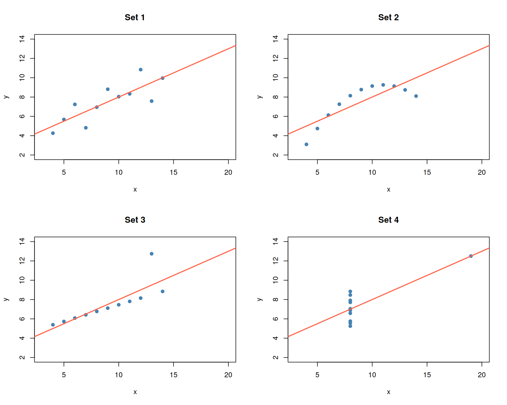
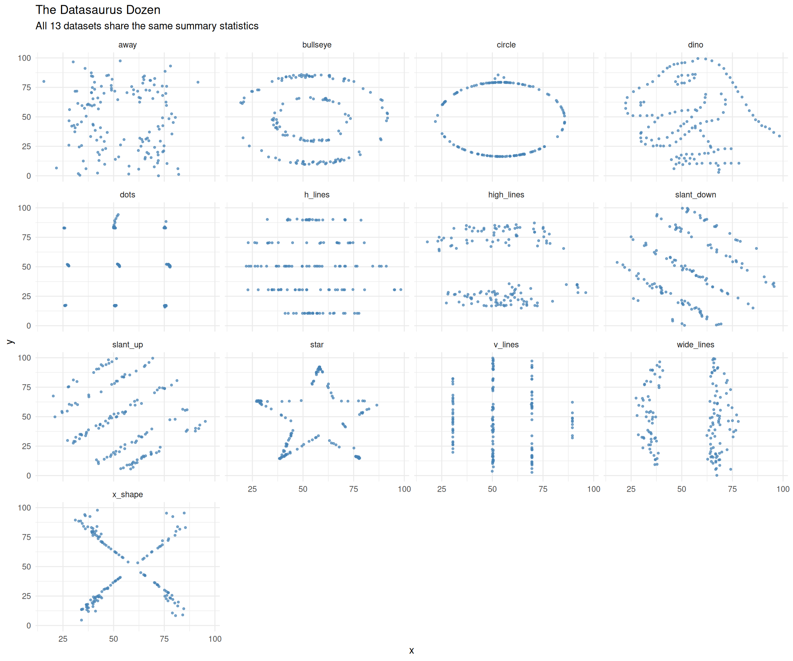
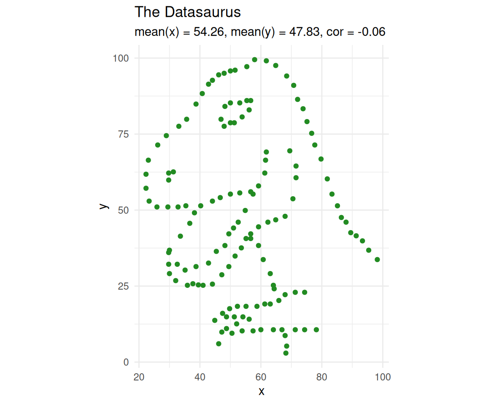

Last updated: 2026-02-12
Checks: 7 0
Knit directory: muse/
This reproducible R Markdown analysis was created with workflowr (version 1.7.1). The Checks tab describes the reproducibility checks that were applied when the results were created. The Past versions tab lists the development history.
Great! Since the R Markdown file has been committed to the Git repository, you know the exact version of the code that produced these results.
Great job! The global environment was empty. Objects defined in the global environment can affect the analysis in your R Markdown file in unknown ways. For reproduciblity it’s best to always run the code in an empty environment.
The command set.seed(20200712) was run prior to running
the code in the R Markdown file. Setting a seed ensures that any results
that rely on randomness, e.g. subsampling or permutations, are
reproducible.
Great job! Recording the operating system, R version, and package versions is critical for reproducibility.
Nice! There were no cached chunks for this analysis, so you can be confident that you successfully produced the results during this run.
Great job! Using relative paths to the files within your workflowr project makes it easier to run your code on other machines.
Great! You are using Git for version control. Tracking code development and connecting the code version to the results is critical for reproducibility.
The results in this page were generated with repository version 444824e. See the Past versions tab to see a history of the changes made to the R Markdown and HTML files.
Note that you need to be careful to ensure that all relevant files for
the analysis have been committed to Git prior to generating the results
(you can use wflow_publish or
wflow_git_commit). workflowr only checks the R Markdown
file, but you know if there are other scripts or data files that it
depends on. Below is the status of the Git repository when the results
were generated:
Ignored files:
Ignored: .Rproj.user/
Ignored: data/1M_neurons_filtered_gene_bc_matrices_h5.h5
Ignored: data/293t/
Ignored: data/293t_3t3_filtered_gene_bc_matrices.tar.gz
Ignored: data/293t_filtered_gene_bc_matrices.tar.gz
Ignored: data/5k_Human_Donor1_PBMC_3p_gem-x_5k_Human_Donor1_PBMC_3p_gem-x_count_sample_filtered_feature_bc_matrix.h5
Ignored: data/5k_Human_Donor2_PBMC_3p_gem-x_5k_Human_Donor2_PBMC_3p_gem-x_count_sample_filtered_feature_bc_matrix.h5
Ignored: data/5k_Human_Donor3_PBMC_3p_gem-x_5k_Human_Donor3_PBMC_3p_gem-x_count_sample_filtered_feature_bc_matrix.h5
Ignored: data/5k_Human_Donor4_PBMC_3p_gem-x_5k_Human_Donor4_PBMC_3p_gem-x_count_sample_filtered_feature_bc_matrix.h5
Ignored: data/97516b79-8d08-46a6-b329-5d0a25b0be98.h5ad
Ignored: data/Parent_SC3v3_Human_Glioblastoma_filtered_feature_bc_matrix.tar.gz
Ignored: data/brain_counts/
Ignored: data/cl.obo
Ignored: data/cl.owl
Ignored: data/jurkat/
Ignored: data/jurkat:293t_50:50_filtered_gene_bc_matrices.tar.gz
Ignored: data/jurkat_293t/
Ignored: data/jurkat_filtered_gene_bc_matrices.tar.gz
Ignored: data/pbmc20k/
Ignored: data/pbmc20k_seurat/
Ignored: data/pbmc3k.csv
Ignored: data/pbmc3k.csv.gz
Ignored: data/pbmc3k.h5ad
Ignored: data/pbmc3k/
Ignored: data/pbmc3k_bpcells_mat/
Ignored: data/pbmc3k_export.mtx
Ignored: data/pbmc3k_matrix.mtx
Ignored: data/pbmc3k_seurat.rds
Ignored: data/pbmc4k_filtered_gene_bc_matrices.tar.gz
Ignored: data/pbmc_1k_v3_filtered_feature_bc_matrix.h5
Ignored: data/pbmc_1k_v3_raw_feature_bc_matrix.h5
Ignored: data/refdata-gex-GRCh38-2020-A.tar.gz
Ignored: data/seurat_1m_neuron.rds
Ignored: data/t_3k_filtered_gene_bc_matrices.tar.gz
Ignored: r_packages_4.4.1/
Ignored: r_packages_4.5.0/
Untracked files:
Untracked: .claude/
Untracked: CLAUDE.md
Untracked: analysis/.claude/
Untracked: analysis/bioc.Rmd
Untracked: analysis/bioc_scrnaseq.Rmd
Untracked: analysis/chick_weight.Rmd
Untracked: analysis/likelihood.Rmd
Untracked: analysis/modelling.Rmd
Untracked: analysis/sim_evolution.Rmd
Untracked: bpcells_matrix/
Untracked: data/Caenorhabditis_elegans.WBcel235.113.gtf.gz
Untracked: data/GCF_043380555.1-RS_2024_12_gene_ontology.gaf.gz
Untracked: data/SeuratObj.rds
Untracked: data/arab.rds
Untracked: data/astronomicalunit.csv
Untracked: data/femaleMiceWeights.csv
Untracked: data/lung_bcell.rds
Untracked: m3/
Untracked: women.json
Unstaged changes:
Modified: analysis/isoform_switch_analyzer.Rmd
Modified: analysis/linear_models.Rmd
Note that any generated files, e.g. HTML, png, CSS, etc., are not included in this status report because it is ok for generated content to have uncommitted changes.
These are the previous versions of the repository in which changes were
made to the R Markdown (analysis/anscombes_quartet.Rmd) and
HTML (docs/anscombes_quartet.html) files. If you’ve
configured a remote Git repository (see ?wflow_git_remote),
click on the hyperlinks in the table below to view the files as they
were in that past version.
| File | Version | Author | Date | Message |
|---|---|---|---|---|
| Rmd | 444824e | Dave Tang | 2026-02-12 | Anscombe’s Quartet and the Datasaurus Dozen |
A common pitfall in data analysis is relying on summary statistics without looking at the data. Two datasets can have identical means, standard deviations, and correlations yet look completely different when plotted. This tutorial demonstrates this lesson using two classic examples: Anscombe’s Quartet (1973) and the Datasaurus Dozen (2017).
The takeaway is simple but important: always visualise your data.
Francis
Anscombe constructed four datasets that have nearly identical
statistical properties. The dataset is built into R as
anscombe.
anscombe x1 x2 x3 x4 y1 y2 y3 y4
1 10 10 10 8 8.04 9.14 7.46 6.58
2 8 8 8 8 6.95 8.14 6.77 5.76
3 13 13 13 8 7.58 8.74 12.74 7.71
4 9 9 9 8 8.81 8.77 7.11 8.84
5 11 11 11 8 8.33 9.26 7.81 8.47
6 14 14 14 8 9.96 8.10 8.84 7.04
7 6 6 6 8 7.24 6.13 6.08 5.25
8 4 4 4 19 4.26 3.10 5.39 12.50
9 12 12 12 8 10.84 9.13 8.15 5.56
10 7 7 7 8 4.82 7.26 6.42 7.91
11 5 5 5 8 5.68 4.74 5.73 6.89Let’s reorganise the data into a long format to make comparisons easier.
datasets <- lapply(1:4, function(i) {
data.frame(
set = paste("Set", i),
x = anscombe[[paste0("x", i)]],
y = anscombe[[paste0("y", i)]]
)
})
anscombe_long <- do.call(rbind, datasets)Now let’s compute summary statistics for each dataset.
stats <- do.call(rbind, lapply(split(anscombe_long, anscombe_long$set), function(d) {
data.frame(
set = d$set[1],
mean_x = round(mean(d$x), 2),
mean_y = round(mean(d$y), 2),
sd_x = round(sd(d$x), 2),
sd_y = round(sd(d$y), 2),
cor_xy = round(cor(d$x, d$y), 3)
)
}))
rownames(stats) <- NULL
stats set mean_x mean_y sd_x sd_y cor_xy
1 Set 1 9 7.5 3.32 2.03 0.816
2 Set 2 9 7.5 3.32 2.03 0.816
3 Set 3 9 7.5 3.32 2.03 0.816
4 Set 4 9 7.5 3.32 2.03 0.817The means, standard deviations, and correlations are nearly identical across all four datasets. The linear regression fits are also very similar.
for (i in 1:4) {
d <- anscombe_long[anscombe_long$set == paste("Set", i), ]
fit <- lm(y ~ x, data = d)
cat(paste0("Set ", i, ": y = ",
round(coef(fit)[1], 2), " + ",
round(coef(fit)[2], 2), "x",
" (R² = ", round(summary(fit)$r.squared, 3), ")\n"))
}Set 1: y = 3 + 0.5x (R² = 0.667)
Set 2: y = 3 + 0.5x (R² = 0.666)
Set 3: y = 3 + 0.5x (R² = 0.666)
Set 4: y = 3 + 0.5x (R² = 0.667)Despite the identical statistics, the four datasets look very different.
par(mfrow = c(2, 2))
for (i in 1:4) {
d <- anscombe_long[anscombe_long$set == paste("Set", i), ]
plot(d$x, d$y,
xlab = "x", ylab = "y",
main = paste("Set", i),
pch = 19, col = "steelblue",
xlim = c(3, 20), ylim = c(2, 14))
abline(lm(y ~ x, data = d), col = "tomato", lwd = 2)
}
par(mfrow = c(1, 1))The lesson: identical summary statistics can describe fundamentally different datasets.
In 2017, Matejka and Fitzmaurice extended Anscombe’s idea by creating 13 datasets that share the same summary statistics (to two decimal places) but produce wildly different scatter plots — including one shaped like a dinosaur.
The datasets are available in the datasauRus
package.
head(datasaurus_dozen)# A tibble: 6 × 3
dataset x y
<chr> <dbl> <dbl>
1 dino 55.4 97.2
2 dino 51.5 96.0
3 dino 46.2 94.5
4 dino 42.8 91.4
5 dino 40.8 88.3
6 dino 38.7 84.9unique(datasaurus_dozen$dataset) [1] "dino" "away" "h_lines" "v_lines" "x_shape"
[6] "star" "high_lines" "dots" "circle" "bullseye"
[11] "slant_up" "slant_down" "wide_lines"Let’s verify that all 13 datasets have the same summary statistics.
datasaurus_dozen %>%
group_by(dataset) %>%
summarise(
mean_x = round(mean(x), 2),
mean_y = round(mean(y), 2),
sd_x = round(sd(x), 2),
sd_y = round(sd(y), 2),
cor_xy = round(cor(x, y), 2),
.groups = "drop"
)# A tibble: 13 × 6
dataset mean_x mean_y sd_x sd_y cor_xy
<chr> <dbl> <dbl> <dbl> <dbl> <dbl>
1 away 54.3 47.8 16.8 26.9 -0.06
2 bullseye 54.3 47.8 16.8 26.9 -0.07
3 circle 54.3 47.8 16.8 26.9 -0.07
4 dino 54.3 47.8 16.8 26.9 -0.06
5 dots 54.3 47.8 16.8 26.9 -0.06
6 h_lines 54.3 47.8 16.8 26.9 -0.06
7 high_lines 54.3 47.8 16.8 26.9 -0.07
8 slant_down 54.3 47.8 16.8 26.9 -0.07
9 slant_up 54.3 47.8 16.8 26.9 -0.07
10 star 54.3 47.8 16.8 26.9 -0.06
11 v_lines 54.3 47.8 16.8 26.9 -0.07
12 wide_lines 54.3 47.8 16.8 26.9 -0.07
13 x_shape 54.3 47.8 16.8 26.9 -0.07All 13 datasets have essentially the same means, standard deviations, and correlations.
ggplot(datasaurus_dozen, aes(x = x, y = y)) +
geom_point(size = 0.8, alpha = 0.7, colour = "steelblue") +
facet_wrap(~ dataset, ncol = 4) +
theme_minimal() +
labs(title = "The Datasaurus Dozen",
subtitle = "All 13 datasets share the same summary statistics")
The “dino” dataset literally spells out a dinosaur, while others form circles, stars, lines, and crosses — all with the same mean, standard deviation, and correlation.
Let’s take a closer look at the dinosaur.
dino <- datasaurus_dozen[datasaurus_dozen$dataset == "dino", ]
ggplot(dino, aes(x = x, y = y)) +
geom_point(size = 1.5, colour = "forestgreen") +
theme_minimal() +
coord_equal() +
labs(title = "The Datasaurus",
subtitle = paste0("mean(x) = ", round(mean(dino$x), 2),
", mean(y) = ", round(mean(dino$y), 2),
", cor = ", round(cor(dino$x, dino$y), 2)))
Anscombe’s Quartet (1973) and the Datasaurus Dozen (2017) both drive home the same point: summary statistics can hide the true structure of your data. Two datasets can have the same mean, variance, and correlation yet look nothing alike.
This is why exploratory data analysis — and plotting in particular — is an essential first step in any analysis. As Anscombe himself wrote:
“A computer should make both calculations and graphs. Both sorts of output should be studied; each will contribute to understanding.”
Before you fit a model, compute a p-value, or draw a conclusion: plot your data.
sessionInfo()R version 4.5.0 (2025-04-11)
Platform: x86_64-pc-linux-gnu
Running under: Ubuntu 24.04.3 LTS
Matrix products: default
BLAS: /usr/lib/x86_64-linux-gnu/openblas-pthread/libblas.so.3
LAPACK: /usr/lib/x86_64-linux-gnu/openblas-pthread/libopenblasp-r0.3.26.so; LAPACK version 3.12.0
locale:
[1] LC_CTYPE=en_US.UTF-8 LC_NUMERIC=C
[3] LC_TIME=en_US.UTF-8 LC_COLLATE=en_US.UTF-8
[5] LC_MONETARY=en_US.UTF-8 LC_MESSAGES=en_US.UTF-8
[7] LC_PAPER=en_US.UTF-8 LC_NAME=C
[9] LC_ADDRESS=C LC_TELEPHONE=C
[11] LC_MEASUREMENT=en_US.UTF-8 LC_IDENTIFICATION=C
time zone: Etc/UTC
tzcode source: system (glibc)
attached base packages:
[1] stats graphics grDevices utils datasets methods base
other attached packages:
[1] lubridate_1.9.4 forcats_1.0.0 stringr_1.5.1 dplyr_1.1.4
[5] purrr_1.0.4 readr_2.1.5 tidyr_1.3.1 tibble_3.3.0
[9] ggplot2_3.5.2 tidyverse_2.0.0 datasauRus_0.1.9 workflowr_1.7.1
loaded via a namespace (and not attached):
[1] utf8_1.2.6 sass_0.4.10 generics_0.1.4 stringi_1.8.7
[5] hms_1.1.3 digest_0.6.37 magrittr_2.0.3 timechange_0.3.0
[9] evaluate_1.0.3 grid_4.5.0 RColorBrewer_1.1-3 fastmap_1.2.0
[13] rprojroot_2.0.4 jsonlite_2.0.0 processx_3.8.6 whisker_0.4.1
[17] ps_1.9.1 promises_1.3.3 httr_1.4.7 scales_1.4.0
[21] jquerylib_0.1.4 cli_3.6.5 rlang_1.1.6 withr_3.0.2
[25] cachem_1.1.0 yaml_2.3.10 tools_4.5.0 tzdb_0.5.0
[29] httpuv_1.6.16 vctrs_0.6.5 R6_2.6.1 lifecycle_1.0.4
[33] git2r_0.36.2 fs_1.6.6 pkgconfig_2.0.3 callr_3.7.6
[37] pillar_1.10.2 bslib_0.9.0 later_1.4.2 gtable_0.3.6
[41] glue_1.8.0 Rcpp_1.0.14 xfun_0.52 tidyselect_1.2.1
[45] rstudioapi_0.17.1 knitr_1.50 farver_2.1.2 htmltools_0.5.8.1
[49] labeling_0.4.3 rmarkdown_2.29 compiler_4.5.0 getPass_0.2-4